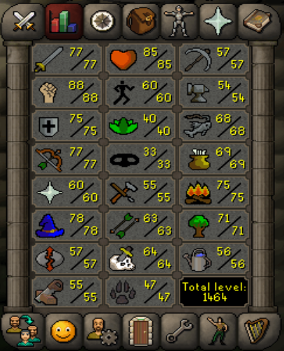
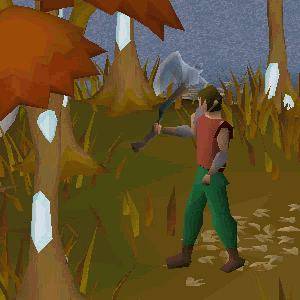
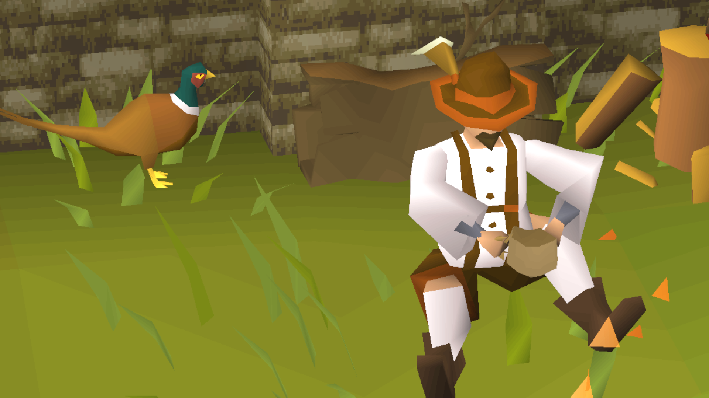
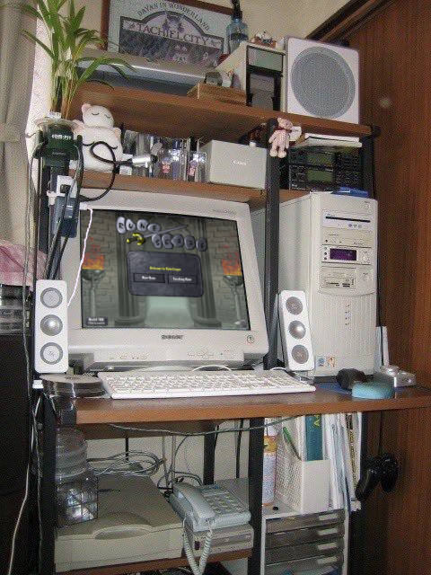

Brayden would like to overly agressively invite you to join him in the Massively Multiplayer Online Roleplaying Game: Runescape.
Upon this page of the World Wide Web Brayden will be covering a small and very biased selection of the Runescape experience in an effort to convince you to join in!

Some things to Keep in mind when starting Runescape
This game has people who have been playing for about 25 years and also people who have been playing for about 25 minutes. regardless of your skill level in the game you will likely find someone similar.
There is no one Real way to play. You can play as effcient as you want, you can play as casually as you want. At the end of the day it is your experience with the game, dont let anyone, including myself, tell you how to enjoy it
This game is massive, its okay to feel lost or confused at any point during your adventure! Check online resources and ask around, maybe someone in game is feeling chatty today.
Skilling can be its own journey!
New oppertunities for better materials and greater treasure await as you level your various skills on your character.
No one is locked out of anything, characters can learn any of the skills on their character sheets

From felling the mightiest trees; to battling the mightiest catches the sea has to offer.

There are many different exciting oppertunities and adventures to find through Skilling.

Here are a few examples of different synergies you can find with your various Skills:
- Cooking & Fishing
Catch Fish with your rods and nets and then use ranges and open fires to cook the fish.
- Woodcutting & Fletching
Chop massive trees down to logs and then use a knife to fletch those logs into arrows shafts. combine those with feathers and arrows tips and you have yourself some ranged amunition! - Mining & Smithing
Use a pickaxe to
Think about all the amazing adventures you could have in this brand new World!

it will likely look like this though...
I hope you get hyped and interested to try and I manage to convince you to join the world of Runescape.